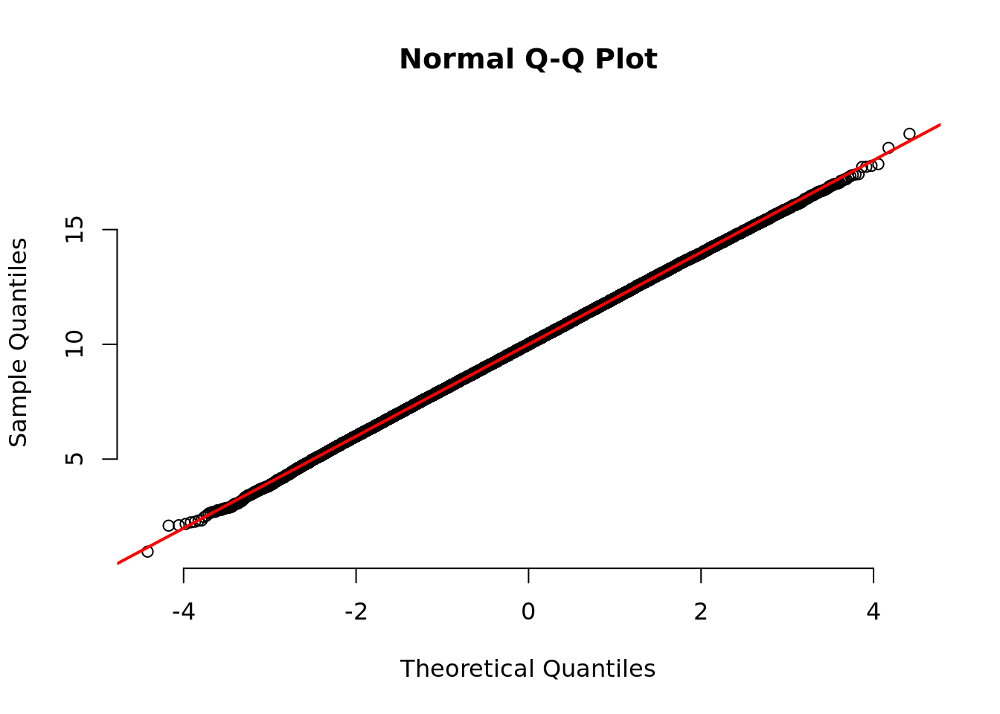
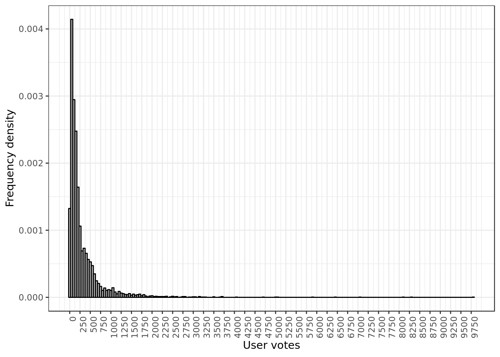
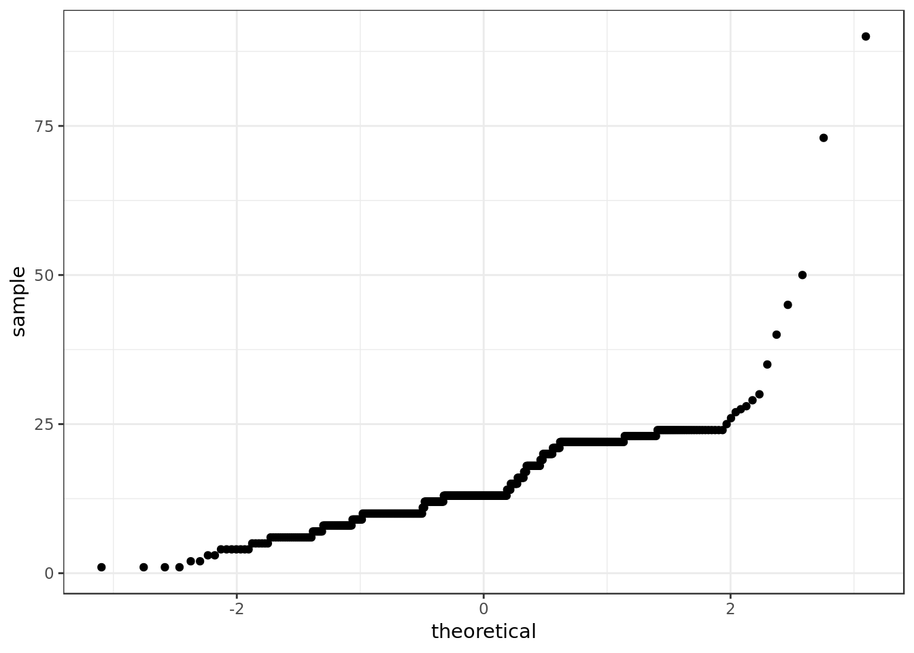
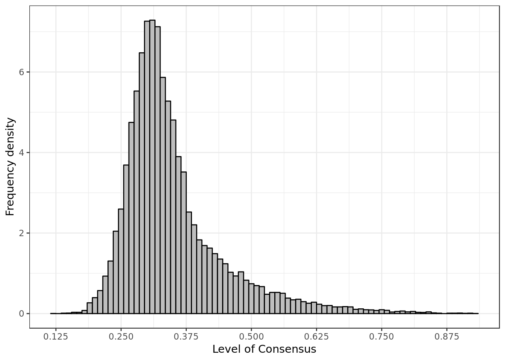
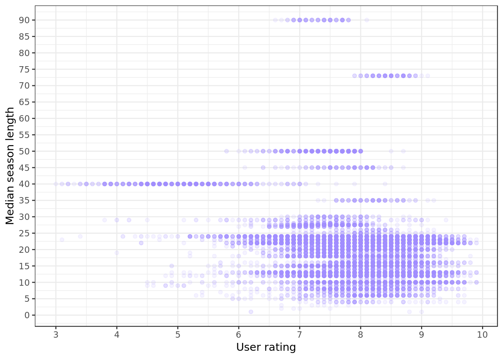
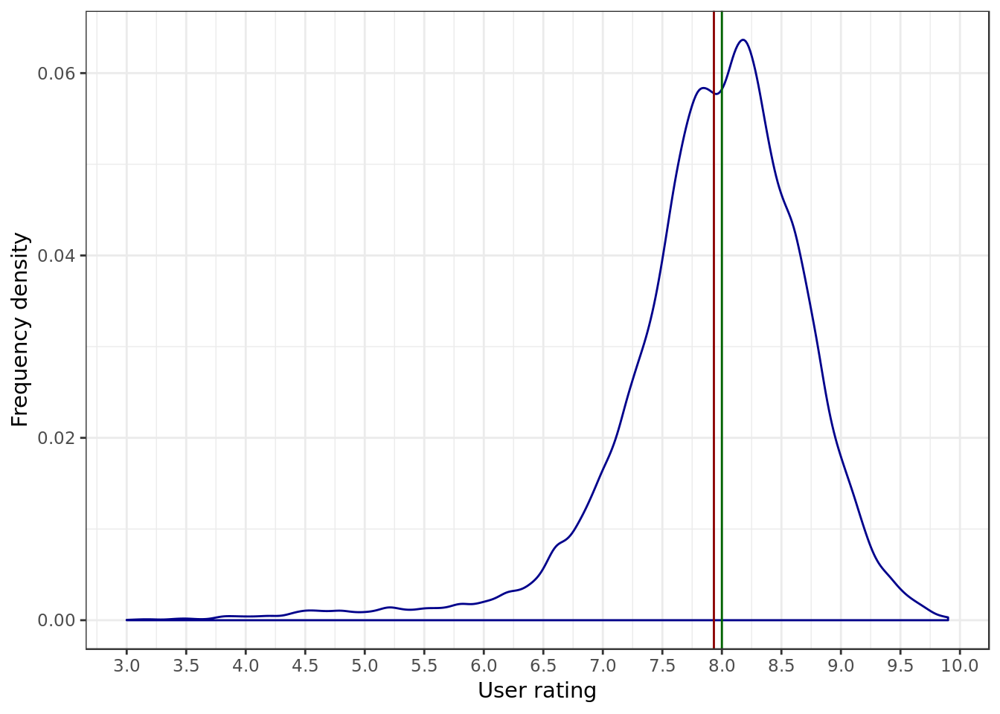
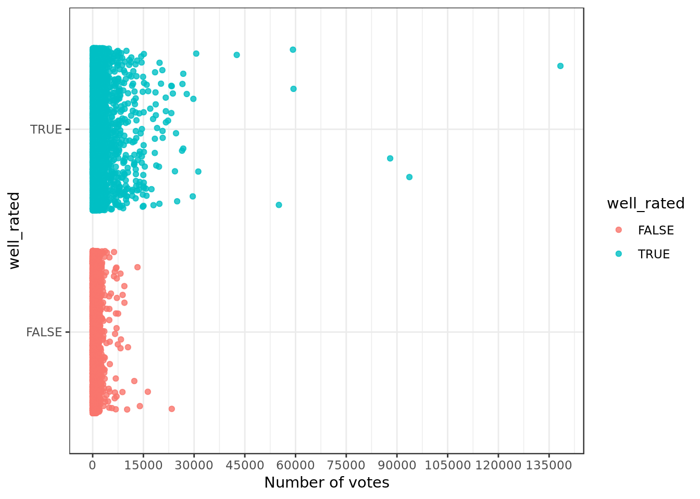
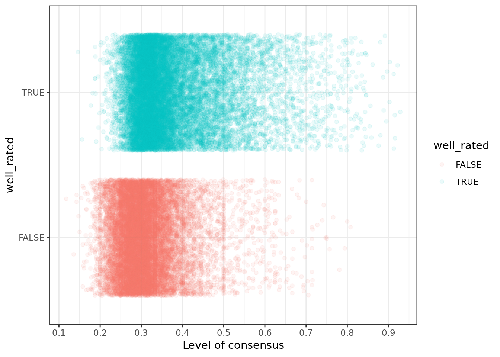

EDA about series ratings on IMDB
Introduction
Analyzed Dataset
Exploratory Data Analysis on data from IMDB about TV series and Streaming. The original data and variables come from this repository. There you can find explained how the data was retrieved and the meaning of each variable.
episodes <- read_csv(here("data/series_from_imdb.csv"),
progress = FALSE,
col_types = cols(.default = col_double(),
series_name = col_character(),
episode = col_character(),
url = col_character(),
season = col_character()))
episodes %>%
glimpse()## Observations: 32,070
## Variables: 18
## $ series_name <chr> "13 Reasons Why", "13 Reasons Why", "13 Reasons Wh...
## $ episode <chr> "Tape 1, Side A", "Tape 1, Side B", "Tape 2, Side ...
## $ series_ep <dbl> 1, 2, 3, 4, 5, 6, 7, 8, 9, 10, 11, 12, 13, 1, 2, 3...
## $ season <chr> "1", "1", "1", "1", "1", "1", "1", "1", "1", "1", ...
## $ season_ep <dbl> 1, 2, 3, 4, 5, 6, 7, 8, 9, 10, 11, 12, 13, 1, 2, 3...
## $ url <chr> "http://www.imdb.com/title/tt5174246/", "http://ww...
## $ user_rating <dbl> 8.5, 8.2, 8.1, 8.3, 8.5, 8.3, 8.6, 8.4, 8.9, 8.8, ...
## $ user_votes <dbl> 3661, 3009, 2784, 2658, 2617, 2491, 2548, 2436, 25...
## $ r1 <dbl> 0.04143948, 0.04176334, 0.04446038, 0.05065666, 0....
## $ r2 <dbl> 0.003816794, 0.003646006, 0.003226963, 0.002251407...
## $ r3 <dbl> 0.0032715376, 0.0046403712, 0.0046611689, 0.003001...
## $ r4 <dbl> 0.004634678, 0.006297647, 0.008246683, 0.005253283...
## $ r5 <dbl> 0.011177754, 0.013258204, 0.019361778, 0.016510319...
## $ r6 <dbl> 0.031079607, 0.036460060, 0.043743277, 0.038273921...
## $ r7 <dbl> 0.09133043, 0.13059330, 0.13302259, 0.11031895, 0....
## $ r8 <dbl> 0.20692475, 0.27842227, 0.28002868, 0.25628518, 0....
## $ r9 <dbl> 0.2764449, 0.2031820, 0.1724632, 0.2112570, 0.2436...
## $ r10 <dbl> 0.3298800, 0.2817368, 0.2907852, 0.3061914, 0.3457...Small explanation about employed estimators
- Mean: the sum of the values of the elements of a group divided by the number of elements in that group.
- Mode: the most frequent element inside a group of values.
- Median: the value inside a group of sorted values that divides them into 50% bigger and 50% smaller.
- IQR: in a group of sorted values contains the 50% central values, e.g. if we had a sequence going from 1 to 100 the IQR would go from 25 to 75 (the 50 central values).x<-rnorm(100000,mean=10, sd=2);
qqnorm(x, pch = 1, frame = FALSE);
qqline(x, col = "red", lwd = 2);
The Q-Q Plot (quantile-quantile plot) will be employed to describe metrics used in this analysis. The Q-Q Plot of a well behaved distribution (gaussian, symetric..) is well aligned as in the example chart.
Data Overview
Number of votes of a certain episode
episodes %>%
group_by(episode) %>%
filter(user_votes != max(user_votes)) %>%
ggplot(aes(user_votes,y=..density..)) +
geom_histogram(binwidth = 50,
fill="grey",
color="black") +
scale_x_continuous(breaks=seq(0,9750,250)) +
labs(x = "User votes",
y = "Frequency density") +
theme(axis.text.x = element_text(angle = 90, hjust = 1))
- We have a obvious mode between 0 and 250 votes.
- The highest values are very far way from the mode, this impacts the distribution mean and median making them higher than the mode.
- There are no values that violate the nature of the quantity (e.g. negative values), and would therefore invalidate our analysis.
Let’s look at the 10 most voted episodes:
episodes %>%
select(series_name,episode,user_votes) %>%
top_n(10, user_votes) %>%
arrange(desc(user_votes))## # A tibble: 10 x 3
## series_name episode user_votes
## <chr> <chr> <dbl>
## 1 Game of Thrones Battle of the Bastards 138353
## 2 Game of Thrones The Winds of Winter 93680
## 3 Breaking Bad Ozymandias 87991
## 4 Game of Thrones Hardhome 59404
## 5 Breaking Bad Felina 59235
## 6 Game of Thrones The Rains of Castamere 55077
## 7 Game of Thrones The Door 42617
## 8 Game of Thrones The Lion and the Rose 31235
## 9 The Walking Dead The Day Will Come When You Won't Be 30624
## 10 Game of Thrones Home 29785The top 3 most voted episodes have a sensibly higher number of votes than the rest. The most voted episode of all in particular has 40.000 more votes than the second most voted episode.
episodes %>%
group_by(episode) %>%
ggplot(aes(sample=user_votes)) +
stat_qq()- The quantile-quantile plot clearly shows the leap around the highest values which are very far away from the rest of the distribution.
Episode rating
episodes %>%
group_by(episode) %>%
ggplot(aes(user_rating, ..density..)) +
geom_histogram(binwidth = 0.1,
fill="grey",
color="black") +
labs(x = "Episode Rating",
y = "Frequency density") +
scale_x_continuous(breaks=seq(0,10,1)) - The most frequent rating is clearly around 8.
- The distribution is relatively well behaved (symetric), there’s however the occurrence of lower ratings (between 3 and 6).
- There are no values that violate the nature of the quantity (e.g. negative values), and would therefore invalidate our analysis.
episodes %>%
group_by(episode) %>%
ggplot(aes(sample=user_rating)) +
stat_qq() - The lower ratings previously mentioned affect the curvature and prove that the distribution of episodes ratings is not symetric (well behaved).
Season length
sumario_n_seasons <- episodes %>%
group_by(series_name, season) %>%
summarise(season_length = n())
episodes <- left_join(episodes, sumario_n_seasons, by= c("series_name","season"))
episodes %>%
select(series_name, season, season_length) %>%
unique() %>%
sample_n(10)## # A tibble: 10 x 3
## series_name season season_length
## <chr> <chr> <int>
## 1 The Simpsons 6 25
## 2 Leverage 4 18
## 3 Madam Secretary 1 22
## 4 quantico 2 23
## 5 Faking It 1 8
## 6 In Treatment 2 35
## 7 Pretty Little Liars 3 24
## 8 Call Me Fitz 2 13
## 9 Castle 6 23
## 10 Homeland 5 12episodes %>%
select(series_name,
season,
season_length) %>%
unique() %>%
ggplot(aes(season_length,..density..)) +
geom_density(aes(y= 2.5 *..density..),
color="lightpink") +
geom_histogram(binwidth = 1,
fill="grey",
color="black") +
scale_x_continuous(breaks=seq(0,120,5)) +
labs(y = "Frequency density", x = "Season length")- The most frequent season lengths are around 10 and 20 episodes (Two modes ou bimodal).
- Some few seasons are curiously long.
- There are no values that violate the nature of the quantity (e.g. negative values), and would therefore invalidate our analysis.
Let’s observe the seasons that called our attention for being too long:
episodes %>%
select(series_name,
season,
season_length) %>%
unique() %>%
top_n(10, season_length) %>%
arrange(desc(season_length))## # A tibble: 10 x 3
## series_name season season_length
## <chr> <chr> <int>
## 1 Yu Yu Hakusho 1 112
## 2 Anger Management 2 90
## 3 Os Cavaleiros do ZodÃaco 1 73
## 4 One Piece 2 68
## 5 Thundercats 1 65
## 6 One Piece 15 62
## 7 One Piece 18 60
## 8 One Piece 17 58
## 9 One Piece 5 57
## 10 One Piece 3 53The series Yu Yu Hakusho which has 4 seasons is being wrongly classified as a single whole season. For this reason, we shall not include the series Yu Yu Hakusho in our analysis regarding seasons.
episodes %>%
filter(series_name != "Yu Yu Hakusho") %>%
ggplot(aes(sample=season_length)) +
stat_qq() - In the Q-Q plot there’s a step (descontinuity), which matches the two modes (two most frequent values) on the respective histogram .
Median season length of a series
To represent the overall season length of a series we will make use of the estimator median. Among the reasons to choose the median over other estimators such as the mean or the trimmed mean we give:
- The median less frequently provides values that aren’t integers (e.g. 4.6) which would make no sense for something as season length.
- The median is a robust meausre, in other words it’s less easily affected by outliers.
summary_season_length <- episodes %>%
group_by(series_name) %>%
summarize(median_season_length = median(season_length)) %>%
ungroup()
episodes <- left_join(episodes, summary_season_length,
by = c("series_name"))
episodes %>%
filter(series_name != "Yu Yu Hakusho") %>%
select(series_name,
season_ep,
median_season_length) %>%
sample_n(10)## # A tibble: 10 x 3
## series_name season_ep median_season_length
## <chr> <dbl> <dbl>
## 1 Crossing Jordan 4 21
## 2 Battlestar Galactica 16 20
## 3 Tru Calling 8 20
## 4 The Amazing Race 11 12
## 5 Brilhante Victoria 6 14
## 6 The X-Files (Arquivo X) 13 22
## 7 Awkward 10 21
## 8 Revolution 12 22
## 9 Longmire 1 10
## 10 Wilfred 13 13episodes %>%
filter(series_name != "Yu Yu Hakusho") %>%
select(series_name, median_season_length) %>%
unique() %>%
ggplot(aes(median_season_length,..density..)) +
geom_density(aes(y= 2.5 *..density..),
color="red") +
geom_histogram(binwidth = 1,
fill="grey",
color="black") +
scale_x_continuous(breaks=seq(0,120,5)) +
labs(x = "Median season length",
y = "Frequency density")- The median season length behaves similarly to the metric season length.
episodes %>%
filter(series_name != "Yu Yu Hakusho") %>%
select(series_name, median_season_length) %>%
unique() %>%
ggplot(aes(sample=median_season_length)) +
stat_qq() 
- The median season length once again behaves similarly to the metric season length.
Consensus about a episode rating
We generated the metric consensus as the relative frequency of the most frequent rating a episode was given from 1 to 10 (r1 to r10).
episodes <- episodes %>%
group_by(series_name,episode) %>%
mutate(consensus = max(r1,r2,r3,r4,r5,r6,r7,r8,r9,r10)) %>%
ungroup()
episodes %>%
select(episode,consensus) %>%
sample_n(10)## # A tibble: 10 x 2
## episode consensus
## <chr> <dbl>
## 1 Turn This Car Around 0.314
## 2 Unaired Pilot 0.328
## 3 Everybody Hates Tattaglia 0.383
## 4 Believers 0.282
## 5 These Boots Were Made for Stalking 0.256
## 6 Shade 0.413
## 7 Chasing Amy and Molly 0.324
## 8 Trespass 0.294
## 9 Trust Exercise 0.294
## 10 Remember Nothing 0.248episodes %>%
select(series_name, consensus) %>%
unique() %>%
ggplot(aes(consensus,..density..)) +
geom_histogram(binwidth = 0.01,
fill="grey",
color="black") +
scale_x_continuous(breaks=seq(0,1,0.125)) +
labs(x = "Level of Consensus",
y = "Frequency density")
- Level of Consensus mode is around 0.3125, in other words most of the time 31.25% of people gave the same rating to an episode.
- Higher levels of consensus occur, going up to around 87.50%.
- There are no values that violate the nature of the quantity (e.g. negative values), and would therefore invalidate our analysis.
episodes %>%
select(series_name, consensus) %>%
unique() %>%
ggplot(aes(sample=consensus)) +
stat_qq() - The higher values which are far away from the mode affect the curvature and prove that the distribution of level of consensus is not symetric (well behaved).
Are shorter seasons better rated?
episodes %>%
filter(series_name != "Yu Yu Hakusho") %>%
ggplot(aes(user_rating,
season_length)) +
geom_point(alpha=0.08,
color="#ff6666") +
scale_y_continuous(breaks=seq(0,100,5)) +
scale_x_continuous(breaks=seq(0,10,1)) +
labs(x = "User rating",
y = "Season length")Seasons between 1 and 25 episodes are visibly disperse with ratings ranging from 3 to 10, it’s visible that most of the occurrences have ratings around 8 (more or less between 7 and 9). This pattern overall holds up despite the season length and matches the distribution of ratings mode which is 8.
There are however, two exceptions:
- For seasons around 40 episodes there’s a sizable drop in terms of rating
- Seasons above 40 episodes seem to experience an increase on user ratings, their relevance doesn’t seem clear or strong, however.
episodes %>%
filter(series_name != "Yu Yu Hakusho") %>%
ggplot(aes(season_length,
user_rating,
group=season_length)) +
geom_boxplot(position = "dodge",
outlier.shape = NA,
color="#ff6666") +
scale_x_continuous(breaks=seq(0,90,5)) +
scale_y_continuous(breaks=seq(0,10,1)) +
labs(y = "User rating",
x = "Season length")
Let’s now talk about boxplots while focusing in the median, to do so we shall desconsider external points to have a clearer perspective of the chart. In terms of median what was seen in the scatter plot repeats itself with the drop on the ratings of seasons around 40 episodes.
- The boxplot lower and upper limits (boxplot whiskers) shows that the increase in the ratings of seasons above 40 episodes doesn’t seem very relevant.
- The boxplot of these seasons are between the upper and lower limits of the boxplot of shorter seasons (There’s a strong Intersection of values).
Series of shorter seasons are better rated?
episodes %>%
filter(series_name != "Yu Yu Hakusho") %>%
group_by(series_name) %>%
unique() %>%
ggplot(aes(user_rating,
median_season_length)) +
geom_point(alpha = 0.1, color="#A58AFF") +
scale_y_continuous(breaks=seq(0,100,5)) +
scale_x_continuous(breaks=seq(0,10,1)) +
labs(x = "User rating",
y = "Median season length")
Looking at the ratings by median season length we see that the distribution of ratings behaves similarly to the ratings by season length. The perceptible effect of focusing on the ratings by median season length is the even sharper drop of user ratings around 40 episodes.
episodes %>%
filter(series_name != "Yu Yu Hakusho") %>%
group_by(series_name) %>%
unique() %>%
ggplot(aes(median_season_length,
user_rating,
group=median_season_length)) +
geom_boxplot(position = "dodge",
outlier.shape = NA,
coef = 0,
fill="#A58AFF",
width=0.5) +
scale_x_continuous(breaks=seq(0,90,5)) +
scale_y_continuous(breaks=seq(0,10,1)) +
labs(y = "User rating",
x = "Median season rating")The boxplot shows similar results to those provided by the analysis of ratings by season length.
Does season length affects consensus?
episodes %>%
filter(series_name != "Yu Yu Hakusho") %>%
group_by(series_name,season) %>%
ggplot(aes(season_length,consensus)) +
geom_point(alpha=0.3) +
scale_y_continuous(breaks=seq(0,1,0.1)) +
scale_x_continuous(breaks=seq(0,100,5)) +
labs(y = "Level of consensus",
x = "Season length")The level of consensus for seasons over 30 episodes, overall, remains between 0.2 and 0.5 of consensus (consensus between 20% and 50%).
There’s a considerable disperson in terms of level of consensus for seasons up till 30 episodes. This might suggest that the season length is not the appropriate characteristic to explain the level of consensus for seasons around that number of episodes.
Conclusion
- Overall season length doesn’t have a meaningful effect on a series rating. Season length does not entail in a better or worse rated season, whether we look exclusively at the season’s length or at the median length of a serie’s season.
- The exception to the aforementioned is that for seasons (and series of median season length) above 40 episodes there’s a sizable drop on user ratings.
- For seasons up to 30 episodes the season length does not seem to provide the proper information to explain level of consensus.
- For seasons over 30 episodes the season length has a limiting effect on the level of consensus, which in general does not go above 0.5 (50%). Specially large seasons could mean episodes of irregular quality, such as filler episodes.
The most voted episodes are better rated?
episodes %>%
ggplot(aes(user_votes,user_rating,
size = user_votes)) +
geom_point(alpha=.3,
position = position_jitterdodge()) +
scale_y_continuous(breaks=seq(0,10,1)) +
scale_x_continuous(breaks=seq(0,1000000,15000)) +
labs(y = "User rating",
x = "Number of votes")There’s a visible increase in the number of votes when we look at the rating above 7. In the range of ratings between 8 and 10 there’s a perceptibly large increase in the number of votes.
episodes %>%
group_by(episode) %>%
ggplot(aes(user_rating)) +
geom_density(aes(y= 0.1 * ..density..),
color="darkblue") +
geom_vline(xintercept = mean(episodes$user_rating), color = "darkred") +
geom_vline(xintercept = median(episodes$user_rating), color = "darkgreen") +
scale_x_continuous(breaks=seq(0,10,0.5)) +
labs(y = "Frequency density",
x = "User rating")
As has been said before, the rating 8 is a particularly interesting point (mode) in the distribution of ratings. The mean (red line) and the median (green line) also converge to that same rating. For this reason we will compare the consensus of the episodes whose ratings are below 8 (not well_rated) with the consensus of the episodes whose rating are above 8 (well_rated).
episodes <-
episodes %>%
mutate(well_rated = user_rating >= 8)
episodes %>%
select(episode,
user_rating,
well_rated) %>%
sample_n(10)## # A tibble: 10 x 3
## episode user_rating well_rated
## <chr> <dbl> <lgl>
## 1 Dance Me to the End of Love 8 TRUE
## 2 Ellcrys 8.2 TRUE
## 3 Crazy Love 9.4 TRUE
## 4 Day 4: 3:00 a.m.-4:00 a.m. 8.5 TRUE
## 5 The Road to Hell 8.4 TRUE
## 6 Babies & Bathwater 8.9 TRUE
## 7 Pirates Get on the Move! Astounding New World! 7.4 FALSE
## 8 Save Our Souls 8.1 TRUE
## 9 The Journey 8.3 TRUE
## 10 Game of the Week 8.3 TRUEepisodes %>%
ggplot(aes(user_votes,well_rated,
color = well_rated)) +
geom_jitter(alpha = .8, width = 0.6) +
scale_x_continuous(breaks=seq(0,1000000,15000)) +
labs(x = "Number of votes")
Results similar to the scatter plot, no visible impact of the well_rated characteristic. It’s even clearer the connection between higher ratings and number of votes.
Better rated episodes imply in higher levels of consensus?
episodes %>%
ggplot(aes(consensus,well_rated,
color = well_rated)) +
geom_jitter(alpha=0.08) +
scale_x_continuous(breaks=seq(0,1,0.1)) +
labs(x = "Level of consensus")
Curiously the mass of higher density in the chart (darker area) of the two groups is relatively close to each other, even so it’s still possible to notice that the mass of occurrences of the well_rated is the rightmost one (higher level of consensus).
Better rated episodes generate higher level of consensus, occurrences above 0.5/50% are more frequent in the well_rated episodes and overall the mass of occurences of the well rated is more to the right (higher level of consensus) than the episodes whom were not well rated.
Conclusion
- There was a visible increase in the number of votes when we look at higher ratings (specially above 8).
- Better rated episodes seem to imply in higher levels of consensus.